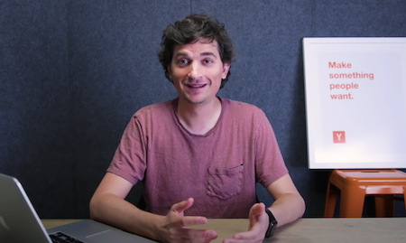

The YC Curriculum
Learn how to build a top startup - from the same people who helped Airbnb, Doordash, Stripe, Reddit, and Coinbase get started.
How to Plan your MVP
Michael Seibel, YC Partner & Co-Founder of Twitch

Modern Startup Funding
Carolynn Levy, inventor of the SAFE

How to Launch your Company in the Press
Kat Manalac, YC Head of Outreach
How to Get Users and Grow
Gustaf Alstromer, YC Partner & Former Head of Growth at Airbnb

How to Lead Teams
Ali Rowghani, CFO of Pixar & COO of Twitter

How and When to Apply to Y Combinator
Dalton Caldwell, YC Partner & Head of Admissions

The Founding Story of Facebook
Mark Zuckerberg, Founder and CEO of Facebook

On Starting and Scaling 23andMe
Anne Wojcicki, Co-Founder and CEO of 23andMe

Boom: A Startup Building a Supersonic Jet
Blake Scholl, Founder and CEO of Boom
Also part of Startup School:
- YC Co-founder Matching: the world's largest co-founder matching platform, with over 100,000 matches made
- Discounts on popular products from companies like AWS, Brex, and Stripe
- A weekly update tool to track your growth and progress
How Co-founder matching works:
person
Create your profile
Let other founders know your preferences for interests, skills, location and more
search
See potential Co-founders
we'll show you candidates best suited for you based on your requirements and prefernces
hub
Connect with your matches
Send invitations to founders that seems like a good fit, and explore the possibility of working together